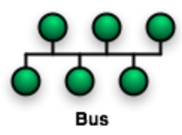
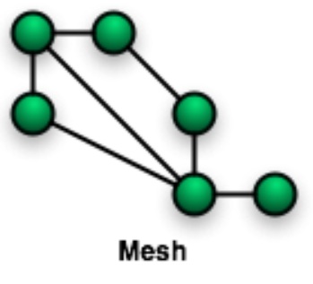

Topologia de Rede:
-
Topologia de Estrela:
Descrição: Todos os dispositivos são conectados a um ponto central, geralmente um switch ou hub.
Vantagens: Fácil de instalar e gerenciar. Problemas em um dispositivo não afetam diretamente os outros.
Desvantagens: A falha do ponto central pode parar toda a rede..png)
-
Topologia de Anel:
Descrição: Cada dispositivo está conectado diretamente a dois outros, formando um anel.
Vantagens: Simplicidade de layout. O desempenho pode ser previsível.
Desvantagens: A falha em um dispositivo pode interromper toda a rede. A adição ou remoção de dispositivos pode ser complicada..png)
-
Topologia de Barramento:
Descrição: Todos os dispositivos estão conectados a um único cabo (o barramento).
Vantagens: Simplicidade de instalação e custo relativamente baixo.
Desvantagens: Problemas com colisões de dados. A falha no barramento pode parar toda a rede.
 -
Topologia de Malha:
Descrição: Cada dispositivo está conectado a todos os outros dispositivos na rede.
Vantagens: Redundância significativa, o que pode aumentar a confiabilidade da rede.
Desvantagens: Cabeamento e configuração complexos. Altos custos associados com a implementação total.
 -
Topologia de Árvore (ou hierárquica):
Descrição: Combina características de topologias de estrela e barramento, criando uma estrutura hierárquica.
Vantagens: Oferece escalabilidade e flexibilidade.
Desvantagens: A complexidade pode aumentar com o tamanho da rede..png)
-
Topologia Híbrida:
Descrição: Combina duas ou mais topologias diferentes em uma única rede.
Vantagens: Pode oferecer benefícios de diferentes topologias.
Desvantagens: Pode ser complexo e caro de implementar.